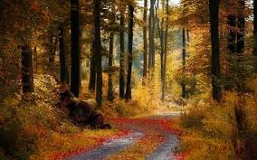
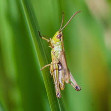

This is my web page that will teach you what grass is in memes.
This web page was made to teach you what nature is.
Here's what GRASS from outside looks like.

Grass was invented by a grass hopper called ninja who ate grass.
Bet you didnt know that, did you.
Here's what he looks like.

He lived to 150 and ate 70 thousand blades of grass he died of a illness called grassiosis
it only took affect when he was 100 he was expected to die in a few hours but he survived another 50 years
because it will make you happy and outside is home to many bugs like the spider,slug,worm,snail these are the some of the most common insects u will see

spiders may look scary but most wont harm you.If you are scared of spiders you may have Arachnophobia.
There are many plants and insects that thrive in the grasslands and gardens if you are scared of all bugs there is a chance you have entomophobia